|

|
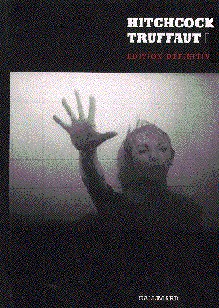
Hitchcock
- Truffaut de Truffaut
Gallimard
En 1955, François Truffaut rencontre Alfred Hitchcock pour les Cahiers du cinéma. En 1962, Jules et Jim vient
consacrer le talent du cinéaste français. Aux Etats Unis, Hitchcock est au faîte de sa créativité et de son succès. Mais les critiques restent réticents.
Naît alors l'idée du "Hitchbook": un livre dont Truffaut serait l'initiateur, le "provocateur" même, et qui
révèlerait la vraie nature de l'homme, vulnérable, sensible, et aussi les secrets perdus que détiennent les grands cinéastes
qui ont commencé à l'époque du muet.
Hitchcock accepte le principe de répondre à 500 questions portant exclusivement sur sa carrière.
Le "Hitchbook" paraît en 1967. Après la disparition d'Hitchcock, le 2 mai 1980, François Truffaut complète la première édition
par un chapitre sur ses derniers films.
Mon avis: LE LIVRE sur Hitchcock. Beau bouquin, nombreuses photos, passionnant!
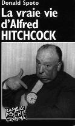
La vrai vie d'Alfred Hitchcock
de Donald Spoto
Ramsay Poche Cinéma
Si tout le monde connaît les films d'Alfred Hitchcock, aucune biographie n'avait
évoqué jusqu'ici les liens étroits qui existent entre la vie privée du cinéaste, ses bizarreries, et ses films, ni la genèse
singulière d'une oeuvre incontournable dans l'histoire du cinéma.
Enfance, éducation, vie à Londres et départ pour l'Amérique: à partir d'un matériel documentaire très riche,
de documents, d'interviews et de correspondance absolument inédits, Donald Spoto a écrit la
grande biographie que l'on attendait sur Hitchcock. Il éclaire ses relations avec des grandes stars du cinéma:
Ingrid Bergman, Laurence Olivier, Madeleine Carroll, Cary Grant, Montgomery Clift, Marlene Dietrich,
James Stewart, Grace Kelly...
Généreux, patient avec les acteurs, plein d'humour, Hitchcock est aussi un créateur cynique, manipulateur,
habité par de noires obsessions: la légende hitchcockienne a sa face sombre. Emerge un portrait inattendu, parfois iconoclaste,
mais qui modifie définitivement notre regard sur les films d'Hitchcock. Son oeuvre, à laquelle on a parfois
reproché sa froideur, nous apparaît alors hantée, extraordinairement incarnée.
Mon avis: La bible de l'AlfredHitchcockophile.
Spoto est à Hitchcock ce qu'Hitchcock est au suspense...
Passionnant du début à la fin, ce pavé de 600 pages est aussi bien une biographie, qu'une analyse
de l'oeuvre, qu'un recueil d'anecdotes de stars, qu'un voyage à travers 50 ans de cinéma mondial...
A conseiller si vous avez mordu aux Entretiens Hitchcock-Truffaut.
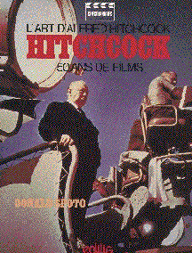
L'art d'Alfred Hitchcock. 50 ans de films de Donald Spoto (Edilig)
"C'est un livre merveilleux. Je suis flatté de ce que dit Donald Spoto au sujet de mon oeuvre,
et je suis très impressionné par l'humour et la grâce de son écriture. C'est un excellent écrivain,
auteur d'un grand livre." Alfred Hitchcock.
Mon avis: L'étude la plus exhaustive jamais parue sur Hitchcock.
Une analyse d'une justesse exceptionnelle sur plus de cinquante films d'Hitchcock.
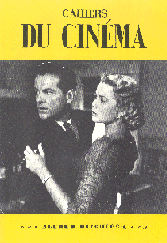
Alfred HITCHCOCK
Les cahiers du cinéma n°39, octobre 1954
Le numéro culte des Cahiers du Cinéma. La guerre des pro-hitchcockien
(Truffaut, Chabrol...) et des "non-pro"-hitchcockien (Bazin).
Mon avis: Des textes fabuleusements intéressants vus 40 ans plus tard. Ce recul
permet de mieux saluer ces quelques fans visionnaires, de mieux voir
les erreurs de certains... Textes de Truffaut et Chabrol passionnants.
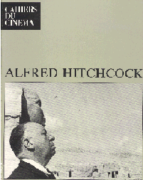
Alfred HITCHCOCK
Les cahiers du cinéma
Ce numéro comporte deux parties. La deuxième n'est autre que le fac similé
du numéro culte 39 d'octobre 54. En première partie, différents textes sur
Hitchcock ont été ajoutés.
Mon avis: Des textes allant de "l'intello fumeux" au "passionné passionnant",
du Hitchcock au quotidien au Hitchcock théorisé.
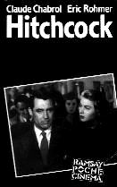
Hitchcock de Claude Chabrol - Eric Rohmer
Ramsay Poche Cinéma
En 1957, les Cahiers du Cinéma, dont Claude Chabrol et Eric Rohmer
sont deux des collaborateurs les plus éminents, défendent vigoureusement la
fameuse "Politique des auteurs" et, à ce titre, obligent les cinéphiles à prendre
en considération l'oeuvre d'un cinéaste réputé "commercial": Alfred Hitchcock. Pour eux Hitchcock
est déjà "l'un des plus grands inventeurs de formes de toute l'histoire du cinéma".
Enthousiastes, combatifs, démonstratifs, Chabrol et Rohmer ouvraient avec ce livre
une fameuse brèche.
Mon avis: Ce livre sort alors qu'Hitchcock n'a pas encore tourné Vertigo, La mort au trousse, Psychose...
Ce premier ouvrage d'importance consacré au maître, présente l'oeuvre d'Hitchcock sous un nouveau jour.
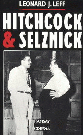
Hitchcock & Selznick de Leonard J.Leff
Ramsay Cinéma
En 1938, David O. Selznick prend sous contrat Alfred Hitchcock, qui le rejoint à Hollywood en 1939.
Selznick est le plus important des producteurs indépendants, et le plus engagé
dans les moindres détails de ses films. Mais Alfred Hitchcock n'est pas du genre à se laisser faire.
Hitchcock et Selznick est un récit, documents inédits à l'appui, de cette collaboration exceptionnelle.
La préparation et le tournage de Rebecca, La maison du docteur Edwardes, les Enchaînés, et le Procès Paradine sont l'objet d'affrontements
et de négociations permanentes entre ces deux personnalités hors du commun.
Leonard Leff a eu accès à toutes les archives, aux différents états des scénarios, aux fameux "mémos" qu'Hitchcock et Selznick
ne cessent de s'adresser, qui concernent toutes les étapes des films, de l'écriture au montage en passant par le choix des acteurs, le
style des décors, des costumes et de la photographie. L'histoire du cinéma cesse d'être faite à coup de dates, de chiffres et d'appréciations subjectives pour être enfin confrontée à la réalité
et à la personnalité de créateurs de l'importance d'Alfred Hitchcock et de David O. Selznick.
Mon avis: Oui, ben celui là, je ne l'ai pas encore lu. Alors on me laisse le temps, et on ne m'agresse pas!
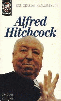
Alfred Hitchcock de Jacques Zimmer
J'ai lu cinéma
Maître du mystère, Magicien du suspense, Roi de l'illusion, celui par qui les innocents se
comportent comme coupables - peut-être même le spectateur! Ce diable d'homme a longtemps divisé
la critique. Jacques Zimmer, sans parti pris, toutes passions apaisées, expose avec clarté et précision comment
et pourquoi Hitchcock est l'un des plus grand artistes du 7ème art.
Mon avis: Un petit ouvrage de vulgarisation, accessible, intéressant et en couleur.
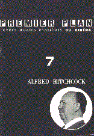
Premier Plan n°7: Alfred Hitchcock
Il s'agit là d'un facicule de 40 pages de 1958. Avec du recul et au second degré cela mérite le coup d'oeil!
L'avant propos commence de la sorte: Ce numéro sur un vieux réalisateur, Alfred Hitchcock. Sa réalisation: Souvent agréable, brillante même,
avec une intelligence du cinéma et des "idées".
6 textes se partagent ce livre: Un texte d'Armengual sur Vertigo, le premier film d'Hitchcock à lui plaire.
Un texte de Raymond Borde: Hitchcock sans métaphysique.
Mon avis:
Un must: la filmographie d'Hitchcock vue par les critiques du journal Positif. Résultat, un guide parfait de l'anti-hitchcockien.
Exemple: La mort aux trousses est longuet mais plaisant. Fenêtre sur cour: Sans doute pour distraire nos yeux fatigués par la platitude
de Grace Kelly, Hitch, jouant les rondeurs, remonte la pendule d'un musicien bruyant.
Enfin, trois autres petits textes de critiques, toujours sur ce bon Alfred.
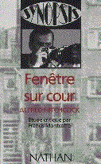
Fenêtre sur cour de Francis Montcoffe
Synopsis Nathan
Aboutissement de la réflexion créatrice d'un artiste sur son art, il témoigne,
par delà le strict divertissement, de la vision particulière d'un homme sur le monde,
l'humanité et la création, bref, d'une inquiétude latente dont les films suivant porteront la marque,
même si ils se cachent derrière un jeu d'apparences et de pur plaisir.
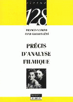
Précis d'analyse Filmique de Francis Vanoye et Anne Goliot-Lété (Nathan Université)
Ce "précis" vise, non à fixer un cadre rigide ou établir une "grille", mais à donner des repères, à préciser une attitude
propre à la démarche d'analyse. Il offre des éléments de réflexion générale (histoire des
formes cinématographiques, outils de narratologie, problèmes de l'interprétation) et des analyses "en pratique",
du plan unique au film entier, de la séquence aux formes brèves.
Mon avis:Ce bouquin est un ouvrage généraliste. Mais il est ici pour deux bonnes raisons.
S'intéresser à Hitchcock sans parler d'analyse de ses films, c'est passer au moins à coté de la moitié de son bonheur.
Ensuite, la moitié de cet ouvrage est consacré à Hitchcock et plus particulièrement à Rebecca.
Analyse rapide du film, analyse détaillée de la scène de la chambre de Rebecca, analyse d'un plan du film (l'arrivé au château).
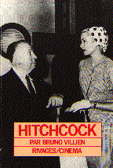
HITCHCOCK
de Bruno Villien
Rivages/Cinéma
Bruno Villien est un ancien journaliste du Nouvel Observateur
et de Cinématographe.
Ce livre détaille tous les films d'Hitchcock avec une fiche pour chaque film
et de nombreuses photographies (noir et blanc). Une analyse générale de
l'oeuvre est également développée dans les 70 premières pages.
Mon avis:Un bon livre généraliste qui conviendra tout à fait au fan débutant.
Peu onéreux et complet. Certaines photographies (90 en tout) très intéressantes
pour un ouvrage de ce prix.
 Alfred HITCHCOCK, la collection
Alfred HITCHCOCK, la collection
Editions ATLAS
Une collection de livrets et cassettes vidéos parue durant l'année 1995 au
rythme d'une parution tous les quinze jours. Plusieurs films muets des
débuts d'Hitchcock re-édités.
Mon avis: Belle présentation pour cette collection. Les livrets sont assez
intéressants
avec de nombreuses photographies couleurs et quelques analyses pertinentes.
Sites Internet
partenaires= - Le site de référence de l'horreur: www.histoirehorreur.com
|